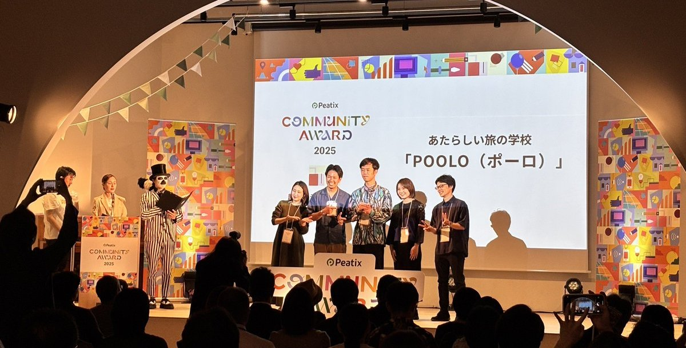

仕事は頑張ってきた。
でも、このままの延長でいいんだっけ。
誰にも言えていなかった違和感を、
同じ30代と話しながら、
自分のことばにする時間です。

最近、旅はできていますか？
仕事以外のことを話せる仲間はいますか？
これからのことを、自分で決められていますか？
そんなことを、同じ30代と一緒に考えてみたい方に向けたイベントです。
当日は、この問いと向き合います
「いつかやりたいな」
と思いながら、
そっと脇に置いてきた
ことはありますか？
30代になって後回しにしてきたことでも大丈夫です。
当日は問いを手がかりに、
自分の経験を書き出していきます。
書いて、
話して、
問いにする。
参加したきっかけと自己紹介を、ひとことずつ。旅先で肩書きを名乗らないように、ここでも肩書きの紹介はなしにしています。
心が動いた場面を思い出して、書き出します。30代のいまの違和感や、これまで続けてこられた理由、夢中になれたことを、答えを出さないまま書いていきます。最近出かけた場所や旅先で心が動いたことを書いても大丈夫です。
3〜4人で、書いたことをそのまま話します。うまくまとめなくて大丈夫です。
書いたことを、「なぜ私は、＿＿＿のか」という問いの形にします。
問いを話して、「あなたなら、どんなときにそう感じる？」と聞いてみます。返ってきた一言をもとに、問いを書き換えます。
なぜ私は、
＿＿＿＿＿＿のか。
書いたことと話したことから、自分の問いをひとつ立てます。
答えは、当日出さなくて大丈夫です。
今週その問いを誰に話すかを決めて、持ち帰ります。


メーカー・企画職／30代・体験会参加者
「10年以上今の会社に勤めていますが、同期が次々と転職していき、自分はこのままでいいのか？ともやもやしていました。もやもやを脱して、自分らしいキャリアを描くきっかけが得られたら嬉しいです。」
メーカー・企画開発職／30代・体験会参加者
「これ誰にも言えてなかったんですけど、仕事というものに熱中できなくなってきてしまっている気がしてて、一通り経験して面倒になった？飽きた？昔の方がパフォーマンスもよかった気がする・・年のせい・・？」
在宅ワーク・事務職／30代・体験会参加者
「周りはライフステージがどんどん進んでるけど、自分は変わってなくて焦る。SNS見てるとモヤモヤする。本当にライフステージ変えたいのかわからない。今の状態でも幸せだけど、周りからの見え方が気になる。」
ご本人が特定されない形で掲載しています。

あたらしい旅の学校POOLO（ポーロ）は、旅を入り口に、自分の生き方や働き方を見つめ直す大人の学び場です。2019年に始まり、これまでに1,200名以上が参加しています。運営は、旅に関する事業を手がけてきた株式会社TABIPPOと株式会社CODOLIです。
POOLOでは、次の4つのステップをくり返しながら学んでいきます。
8ヶ月のオンラインプログラム「POOLO LIFE」は、この4つをくり返す場です。この90分は、そのうち「自問」と「対話」を体験する時間です。
POOLO LIFEのページを見る

運営：株式会社TABIPPO／株式会社CODOLI
Peatix Community Award 2025 受賞
POOLOで出会う30代の方から、よく似た話を聞くようになりました。仕事は回せていて、キャリアもそれなりに積み上がっている。それでも、これで合っているんだっけという小さな違和感がある、という話です。
そんな方に、自分の経験を誰かと一緒にゆっくり見つめ直す時間を持ってもらいたいと考えて、このイベントを企画しました。まずは1回、気軽に来てもらえたら嬉しいです。
PCからご参加ください。スマートフォンからの参加はご遠慮ください。
全員に、書く時間と話す時間があります。
気になった方は、POOLO公式LINEからお申し込みください。